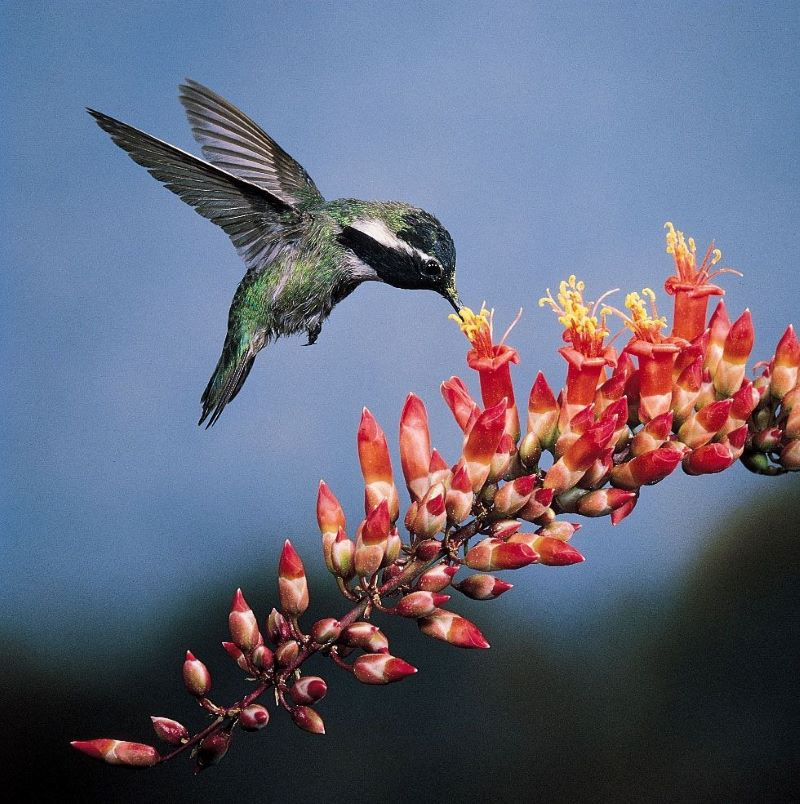
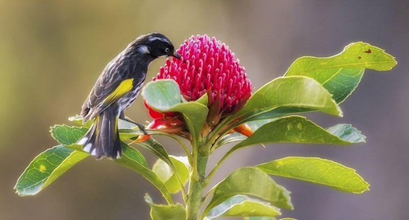
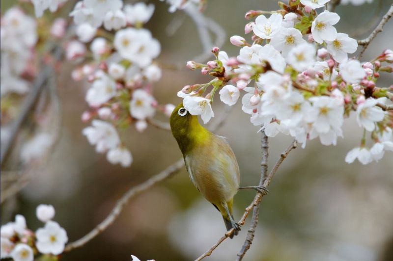

Birds
Birds are key pollinators in tropical and temperate regions.
Around 2,000 species of birds worldwide regularly visit flowers,
and over 1,600 of those species are especially adapted to do so.
The pollination of plants by birds is known as ornithophily.
This term comes from the taxonomic order that birds belong to, Ornithurae,
and the Greek -philia, which means love or affinity.
These plants typically bloom during the day with brightly colored, tubular petals and
the will have strong supports to perch on.
Birds feed on the nectar within the flowers, as well as insects and spiders that inhabit them.
Jump to: Hummingbird Example 𓅪
Honeyeater Example 𓅪
White-eye Example
Costa's Hummingbird

A Costa's hummingbird, Calypte costae , visiting an
ocotillo flower, Fouquieria splendens .
(Hummingbird Image Source )
Description from Costa's hummingbird Wikipedia :
This species is small, as a mature adult grows to only 3–3.5 in (7.6–8.9 cm) in length,
with a wingspan of 11 cm, and an average weight of 3.05 g for males and 3.22 g for females.
The male has a mainly green back and flanks, a small black tail and wings,
and patches of white below their gorgeted throat and tail. Its most distinguishing
feature is its vibrant purple cap and throat with the throat feathers flaring out
and back behind its head. The female is not as distinct as the male, having grayish-green
above with a white underbelly.
New Holland Honeyeater

A New Holland Honeyeater, Phylidonyris novaehollandiae , visiting a
waratah flower, Telopea , in New South Wales, Australia.
(Honeyeater Image Source )
Description from New Holland honeyeater Wikipedia :
The bird is around 18 cm (7.1 in) long and is mainly black, with a white iris,
white facial tufts and yellow margins on its wing and tail feathers. It is a very
active bird and rarely sits long enough to give an extended view. When danger
approaches a New Holland honeyeater, such as a bird of prey, a group of honeyeaters
will form together and give a warning call. Sexes are similar in looks with the
exception that females are, on average, slightly smaller. Young New Holland honeyeaters
(< 1 year old) have similar coloring but have grey eyes and a yellow gape and 'whiskers'
near the nares. They appear to be a socially monogamous bird with no sign of co-operative
breeding, but this observation is yet to be examined.
Warbling White-eye

A warbling white-eye, Zosterops japonicus , visiting a
cherry blossom tree, Prunus Cerasus , in bloom.
(White-eye Image Source )
Description from Warbling white-eye Wikipedia :
The warbling white-eye is olive green on its back, from anterior to posterior, and is
pale green on its underside. Its feet, legs, and bill range from black to brown.
It has a green forehead and a yellow throat. The white-eye has rounded wings and a
long, slender bill – both of which indicate this bird to be very acrobatic. Its wings
are dark brown but outlined in green. Like other white-eyes, this species exhibits the
distinctive white eyering that gives it its name (mejiro, as the bird is known in Japan,
translates to "white eye"). Adults range from 4 to 4.5 in (10 to 11 cm) in length,
and weigh between 9.75 and 12.75 grams.